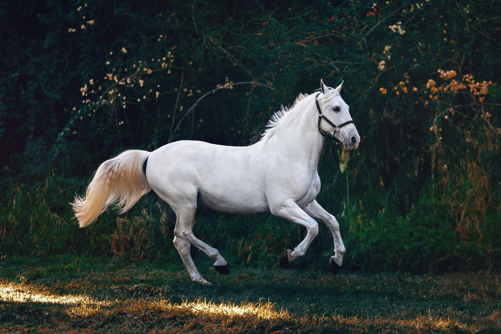

Rusa, sambar, atau menjangan (bahasa Inggris: deer) adalah hewan mamalia pemamah biak (ruminan) yang termasuk famili Cervidae. Salah satu ciri khas rusa adalah adanya rangga[1] dan bukan tanduk, yang merupakan pertumbuhan tulang yang berkembang setiap tahun (biasanya pada musim panas) terutama pada rusa jantan (walaupun ada beberapa pengecualian). Ada sekitar 34 spesies rusa di seluruh dunia yang terbagi menjadi dua kelompok besar: kelompok rusa dunia lama yang termasuk subfamilia Muntiacinae dan Cervinae; serta kelompok rusa dunia baru, Hydropotinae dan Odocoilinae.
Willi Septiansyah
Mammalia
LlAMA / Ilama
Llama (Lama glama) adalah binatang berambut tipis camelidae yang juga binatang asli Amerika Selatan. Llama juga biasa digunakan sebagai binatang pengangkut barang oleh masyarakat Inka[1] dan masyarakat di sekitar pegununungan Andes. Binatang ini bisa mencapai tinggi 1,6 meter hingga 1,8 meter dengan berat 127 kilogram hingga 204 kilogram. Bayi Llama (disebut cria) memiliki berat antara 9 kg hingga 14 kg. Llama adalah binatang sosial yang hidup secara berkelompok. Llama dapat membawa barang 25% hingga 30% dari berat badannya
Willi Septiansyah
Mammalia
Fox / Rubah
Rubah (serapan bahasa Persia : روباهها) adalah karnivora kecil. Terdapat 27 spesies rubah, mereka adalah hewan omnivora dan anggota terkecil famili Canidae (mamalia yang berhubungan dengan anjing). Mereka adalah pelari cepat dan tangkas.
Rubah dapat ditemui di semua benua, hidup di hutan, semak-semak dan padang pasir. Kebanyakan rubah makan tikus, vole, kelinci, telur burung, serangga besar dan daging bangkai. Di Britania Raya, terdapat olahraga umum untuk berburu rubah dengan kuda dan anjing.

Willi Septiansyah
Mammalia
Horse / Kuda
Kuda (Equus caballus atau us ferus caballus) adalah salah satu dari sepuluh spesies modern mamalia dari genus Equus. Sejak dahulu hewan ini merupakan salah satu hewan peliharaan yang berfungsi secara ekonomis dan memiliki nilai historis. Kuda juga memegang peranan penting dalam pengangkutan orang dan barang selama ribuan tahun.
Kuda dapat ditunggangi oleh manusia dengan menggunakan sadel dan dapat pula digunakan untuk menarik sesuatu, seperti kendaraan beroda, atau bajak. Pada beberapa daerah, kuda juga digunakan sebagai sumber makanan. Walaupun peternakan kuda diperkirakan telah dimulai sejak tahun 4500 SM, bukti-bukti penggunaan kuda untuk keperluan manusia baru ditemukan terjadi sejak 2000 SM.[1]
Dalam bahasa Jawa disebut jaran, bahasa Makassar disebut jarang.
Willi Septiansyah
Mammalia
Giant Panda / Panda Raksasa
Panda raksasa (Ailuropoda melanoleuca, berarti "Kaki-kucing hitam-putih"; Hanzi sederhana: 大熊猫; Hanzi tradisional: 大熊貓; Pinyin: dà xióng māo; Jyutping: daai6 hung4 maau1, berarti "kucing beruang besar")[1] atau hanya disebut panda, adalah seekor mamalia yang diklasifikasikan ke dalam keluarga beruang,[2] Ursidae, yang merupakan hewan asli Tiongkok Tengah. Panda raksasa tinggal di wilayah pegunungan, seperti Sichuan dan Tibet. Pada setengah abad ke-20 terakhir, panda menjadi semacam lambang negara Tiongkok, dan sekarang ditampilkan pada uang emas negara tersebut.
Willi Septiansyah
Aves
Kingfisher Bird / Burung Cekakak
Cekakak, Raja Udang, atau dalam Bahasa Inggris disebut Kingfisher (Alcedinidae) adalah keluarga burung berukuran kecil hingga sedang, berwarna cerah dalam urutan Coraciiformes[2]. Secara umum, burung cekakak mengacu pada beberapa jenis burung seperti raja-udang, pekaka, kukabura, dan udang-merah. Mereka memiliki penyebaran dengan sebagian besar ditemukan di daerah tropis Afrika, Asia, dan Oseania. Keluarga berisi sekitar 114 spesies dan dibagi menjadi tiga subfamilies dan 19 genera. Semua kingfishers memiliki kepala besar, paruh panjang, tajam, runcing, kaki pendek, dan ekor tebal.[2] Sebagian besar spesies memiliki bulu yang cerah dengan hanya perbedaan kecil antara jenis kelamin. Sebagian besar spesies dapat ditemukan di daerah tropis, dan sebagian kecil hanya ditemukan di hutan. Mereka mengkonsumsi berbagai macam mangsa yang biasanya ditangkap dengan menukik turun dari tempat bertengger. Spesies ini pada umumnya memakan ikan yang hidup di dekat sungai, dan memakan invertebrata kecil yang hidup jauh dari perairan. Seperti anggota lain dari spesies ini, mereka bersarang di lubang, baik lubang alami atau buatan di tanah. Beberapa kingfishers bersarang di sarang rayap arboreal. Beberapa spesies, terancam punah. Di Inggris, kata "kingfisher" biasanya mengacu pada kingfisher umum